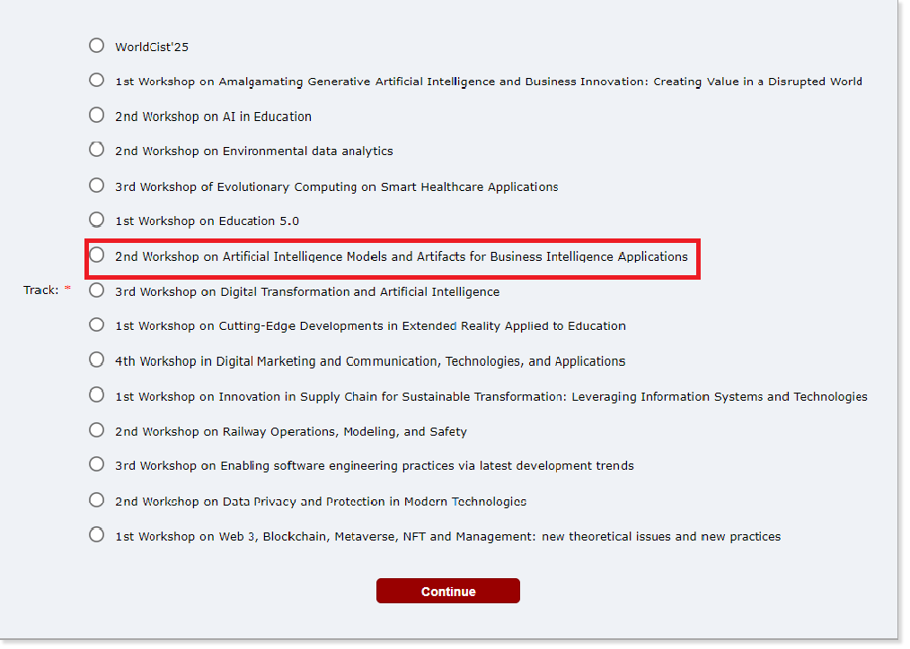

WorldCist'26 Workshop | March 31 - April 2, 2026 | Madeira, Portugal
The exponential growth and diversity of data in business environments present significant challenges for analysis and decision-making. Organizations are confronted with a wide array of data formats and an ever-increasing volume of information, which complicates the extraction of actionable insights. Furthermore, the volatility and unpredictability of business needs necessitate swift and strategic adaptations, as requirements evolve rapidly. These complexities underscore the urgent need for innovative approaches, technologies, and models to effectively ingest, process, and analyze data. Beyond traditional statistical methods, advanced solutions are required to uncover new knowledge that can drive business growth and optimization.
Artificial Intelligence (AI) has emerged as a transformative force in addressing these data challenges. In recent years, AI has moved from conceptual exploration to practical application across numerous business domains. However, its integration into business processes has been selective, with a gradual absorption into various management aspects. AI's impact is particularly evident in areas such as automation of production processes, investment and risk management, business communication strategies, customer relationship management, operational support, cybersecurity, and advanced data analytics.
AI tools, such as ChatGPT, are now recognized as essential instruments for supporting intensive data search, preparation, and analysis in a broad range of domains, including the most traditional business sectors. These tools offer sophisticated models and techniques that enable organizations to handle data in a highly efficient, rapid, and streamlined manner, thereby enhancing competitiveness and informing decision-making processes at operational, tactical, and strategic levels.
This workshop aims to highlight and promote cutting-edge research on innovative techniques and models for data storage, processing, and analysis using disruptive approaches to knowledge engineering and decision-making systems. Emphasizing the use of AI models and techniques, the workshop will focus on solutions that incorporate the latest advancements in Generative AI, showcasing their potential to address complex data challenges and contribute to business advancement.
Participants are invited to submit papers on the following topics, but not limited to:
Universidade do Minho, Portugal
Email: obelo@di.uminho.pt
Phone: +351 969 221 576
Polytechnic Institute of Porto, Portugal
Email: bmo@estg.ipp.pt
Phone: +351 916 439 065
Polytechnic Institute of Porto, Portugal
Email: oao@estg.ipp.pt
Phone: +351 917 301 044
When submitting your paper, please select the track "2nd Artificial Intelligence Models and Artifacts for Business Intelligence Applications" as shown in the following image:
To ensure that a full paper or short paper is published and presented, at least one of the authors must be fully registered by the 8th of January 2025, and the paper must comply with the suggested layout and page-limit. Additionally, all recommended changes must be addressed by the authors before they submit the camera-ready version.
No more than one paper per registration will be published. An extra fee must be paid for publication of additional papers, with a maximum of one additional paper per registration. One registration permits only the participation of one author in the conference.
Full and Short papers will be published in Proceedings by Springer, in several books of the Lecture Notes in Networks and Systems series.
Full and short papers accepted and registered will be published in Proceedings by Springer, in several volumes of the Lecture Notes in Networks and Systems book series, will be submitted for indexation by Scopus, WoS, DBLP, Google Scholar, among others, and will be available in the SpringerLink Digital Library.
Two types of papers can be submitted (both will be published at the Springer LNNS proceedings):
Submitted papers must comply with the format of Lecture Notes in Networks and Systems series (see Instructions for Springer Guidelines), be written in English, must not have been published before, not be under review for any other conference or publication, and not include any information leading to the authors’ identification. Therefore, the authors’ names, affiliations, and bibliographic references should not be included in the version for evaluation by the Program Committee. This information should only be included in the camera-ready version, saved in Word or Latex format and also in PDF format. These files must be accompanied by the Consent to Publish form filled out, in a ZIP file, and uploaded to the conference management system.
All papers will be subjected to a “double-blind review” by at least two members of the Program Committee. Based on the Program Committee evaluation, the Conference Chairs can reject or accept a paper. In the latter case, it can be accepted as the type originally submitted or as another type. Thus, full papers can be accepted as short papers.
If you have any questions or need further information, please contact us at: